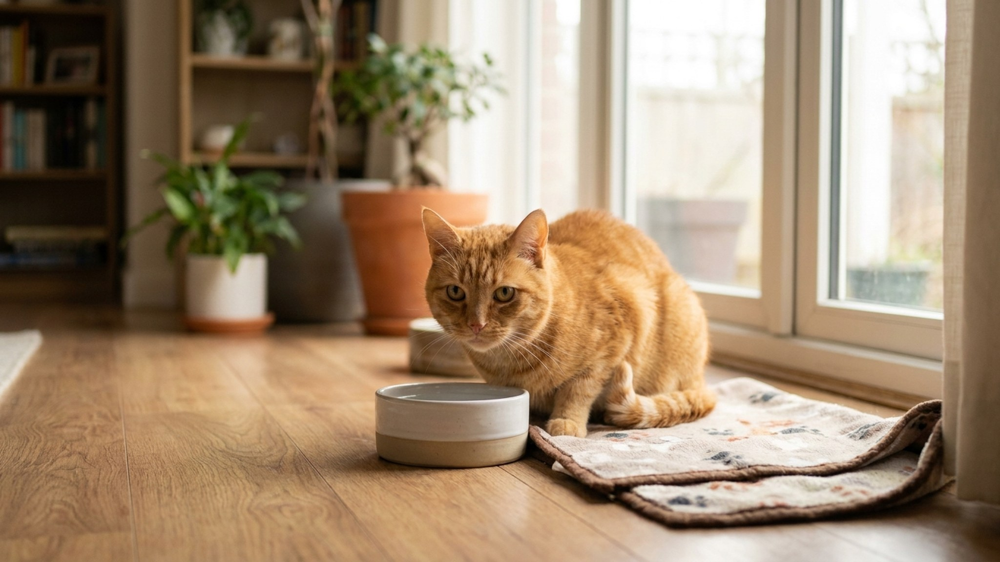

Кот ходит к лотку каждые 20 минут, почти ничего не выдавливает и жалобно мяукает — это мочекаменная болезнь до тех пор, пока не доказано обратное. МКБ у котов встречается в разы чаще, чем у кошек, и при полной закупорке убивает за 48 часов. Разбираем, как распознать, что делать до ветеринара и чем кормить после.
Анатомия виновата. Уретра самца значительно длиннее и уже, чем у самки: у кота — около 10 см с диаметром в самом узком месте 0,5-1 мм. Даже мелкие кристаллы или слизистые пробки способны создать полную обструкцию. У кошек такое случается редко именно из-за более широкого и короткого мочеиспускательного канала.
По данным ветеринарных клиник, на долю котов приходит около 85% обращений по МКБ с признаками обструкции. Стерилизованные коты болеют так же часто, как нестерилизованные — гормональный статус не является защитным фактором.
Наиболее распространённые типы камней и кристаллов у котов: струвиты (магний-аммоний-фосфат) и оксалаты кальция. Струвиты чаще встречаются у молодых котов, оксалаты — у животных старше 7 лет. Тип камня определяет лечение, поэтому анализ мочи и УЗИ — обязательны.
МКБ может протекать скрыто месяцами, а потом стать острой ситуацией за несколько часов. Симптомы по степени срочности:
Экстренные — везти в клинику прямо сейчас:
Тревожные — к ветеринару сегодня:
Наблюдать, записаться к ветеринару на этой неделе:
При признаках полной обструкции нет «домашней помощи» — только клиника. Но если ситуация не экстренная, вот что разумно сделать:
В клинике потребуются: анализ мочи (общий + бактериальный посев), УЗИ мочевого пузыря и почек, иногда рентген (для обнаружения рентгеноконтрастных камней). При обструкции — катетеризация под анестезией, иногда хирургия.
При частичной обструкции или воспалении без закупорки — медикаментозное лечение: спазмолитики, противовоспалительные (мелоксикам под контролем функции почек), антибиотики при бактериальной инфекции, препараты для растворения струвитов (только по назначению).
При полной обструкции — катетеризация: ветеринар вводит катетер под седацией, промывает уретру и мочевой пузырь, устанавливает катетер на 1-3 дня для восстановления функции. Параллельно — капельница для нормализации электролитов: острая задержка мочи ведёт к гиперкалиемии, которая опасна для сердца.
Рецидив после первого эпизода без изменения образа жизни и диеты — вопрос времени. По статистике, около 35% котов переживают повторный эпизод в течение года без коррекции питания.
Диета — не дополнение к лечению. Это его основная часть. Тип диеты зависит от типа камней:
При струвитах: нужно закислить мочу и снизить уровень магния. Ветеринарные корма Hills Prescription Diet c/d, Royal Canin Urinary S/O, Purina Pro Plan UR. Ключевые параметры на этикетке: Mg не более 0,02% в рационе, влажность рациона — максимальная.
При оксалатах кальция: нужно защелачить мочу и снизить кальций. Корма: Hills u/d или Purina Pro Plan Urinary Ox/St. Никакого кальция сверх нормы, никаких витамина D в дополнительных дозах.
Универсальные правила независимо от типа камней:
Это несложно и важно. В зоомагазинах и аптеках продаются pH-тест-полоски для мочи. Для котов после МКБ целевые значения:
Как проверить: положить чистый лоток без наполнителя, дождаться мочеиспускания, опустить полоску в лужицу на 1-2 секунды, сравнить с шкалой. Делать это раз в 1-2 недели, особенно первые 3 месяца после лечения.
Если pH стабильно выходит за целевые пределы — диету нужно корректировать с ветеринаром. Это не разовая настройка: следить за pH придётся всю жизнь кота.
МКБ — хроническое заболевание с управляемыми факторами риска. Вот что работает:
Большинство случаев МКБ решается консервативно и катетеризацией. Хирургия нужна при:
Перинеальная уретростомия — радикальное решение, которое устраняет риск обструкции, но не устраняет МКБ как таковую. Диета и контроль нужны и после операции.
Примерно 50-60% случаев симптомов МКБ у котов приходится не на камни и не на инфекцию, а на идиопатический цистит — воспаление мочевого пузыря без установленной причины. Его правильное название в ветеринарии: FLUTD (Feline Lower Urinary Tract Disease) или FIC (Feline Idiopathic Cystitis).
Симптомы идентичны: частые походы в туалет, кровь в моче, напряжение при мочеиспускании. Разница — в анализах: нет кристаллов, нет бактерий, нет камней на УЗИ. При этом коту больно и плохо.
Главный провоцирующий фактор FIC — стресс. Переезд, новый питомец, конфликты с другой кошкой, изменение режима кормления, даже ремонт в квартире — всё это может запустить острый эпизод. У предрасположенных котов эпизоды могут повторяться 2-4 раза в год на протяжении всей жизни.
Лечение FIC отличается от лечения МКБ: ключевая роль — снижение стресса. Обогащение среды (полки, домики, когтеточки, игровые сессии), стабильный режим, феромонный диффузор Феливей, иногда антидепрессанты. Диета с высоким содержанием влаги остаётся актуальной — разбавленная моча раздражает воспалённый мочевой пузырь меньше.
Генетическая предрасположенность к МКБ существует, хотя она не определяющая. Повышенный риск:
Кастрированные коты болеют МКБ в разы чаще некастрированных — не потому что кастрация вредна, а потому что кастрация обычно проводится рано и кот затем ведёт менее активный образ жизни. Контроль веса и питания для кастрированных котов особенно важен.
После постановки диагноза МКБ хозяева часто выходят из клиники с горой назначений, но без понимания картины. Полезные вопросы врачу:
Хороший ветеринар ответит на все эти вопросы. Если уходите без ответов — можно уточнить при повторном звонке или записаться к другому специалисту для второго мнения. МКБ — слишком серьёзное заболевание для неопределённости.